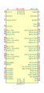
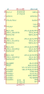
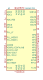

| Symbol |
Description |

ADAU1450 | Description: SigmaDSP SigmaDSP Digital Audio Processor, 147.456 MHz, 8kword Data RAM, I2C/SPI, LFCSP-72
Keys: sigmadsp audio
Datasheet: https://www.analog.com/media/en/technical-documentation/data-sheets/ADAU1452_1451_1450.pdf |

ADAU1451 | Description: SigmaDSP SigmaDSP Digital Audio Processor, 294.912 MHz, 40kword Data RAM, I2C/SPI, S/PDIF I/O, 16-Channel ASRC, LFCSP-72
Keys: sigmadsp audio
Datasheet: https://www.analog.com/media/en/technical-documentation/data-sheets/ADAU1452_1451_1450.pdf |
ADAU1452 | Description: SigmaDSP SigmaDSP Digital Audio Processor, 294.912 MHz, 40kword Data RAM, I2C/SPI, S/PDIF I/O, 16-Channel ASRC, LFCSP-72
Keys: sigmadsp audio
Datasheet: https://www.analog.com/media/en/technical-documentation/data-sheets/ADAU1452_1451_1450.pdf |

ADAU1701 | Description: SigmaDSP 28-/56-Bit Audio Processor with Two ADCs and Four DACs, 50 MIPS, 1kword Program RAM, 2kword Data RAM, LQFP-48
Keys: sigmadsp audio adc dac
Datasheet: https://www.analog.com/media/en/technical-documentation/data-sheets/ADAU1701.pdf |
ADAU1702 | Description: SigmaDSP 28-/56-Bit Audio Processor with Two ADCs and Four DACs, 25 MIPS, 512kword Program RAM, 512kword Data RAM, LQFP-48
Keys: sigmadsp audio adc dac
Datasheet: https://www.analog.com/media/en/technical-documentation/data-sheets/ADAU1702.pdf |